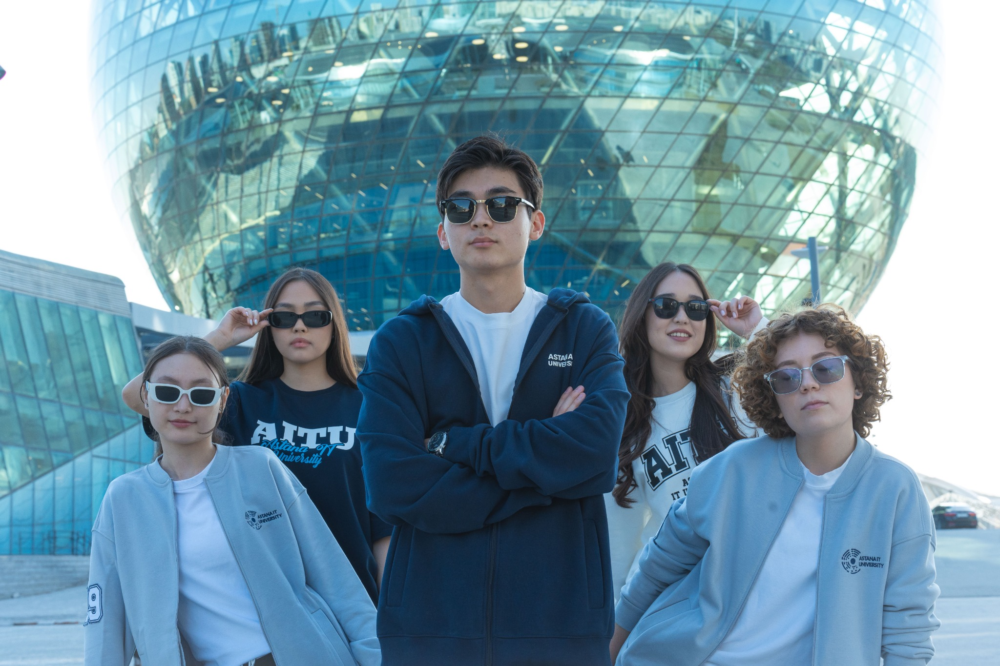

01 / Learning
Projects start early.
AITU describes its programmes as hands-on, with practical work and real IT projects from the first year. That changes the rhythm of campus: ideas are meant to leave the notebook.
03 / Campus life
At AITU, a normal day can move from a lecture to a prototype, from a club meeting to a late coffee. This is a small guide to the people, spaces, and ideas that make the campus feel alive.

The address
Astana IT University is based at 55/11 Mangilik El Avenue, EXPO Business Center, Block C1. The location puts study, technology, public events, and the wider Expo district in the same daily frame.
Read the campus
AITU describes its programmes as hands-on, with practical work and real IT projects from the first year. That changes the rhythm of campus: ideas are meant to leave the notebook.

Software engineering, AI and data science, cybersecurity, intelligent systems, creative industries, and digital public administration all have a place in the AITU story.

Academic mobility gives students a route into international study and professional networks. You can build something local while keeping the horizon wide.
Facts checked against the official AITU website and the EXPO heritage site. This page is a friendly editorial guide, not an official university notice.